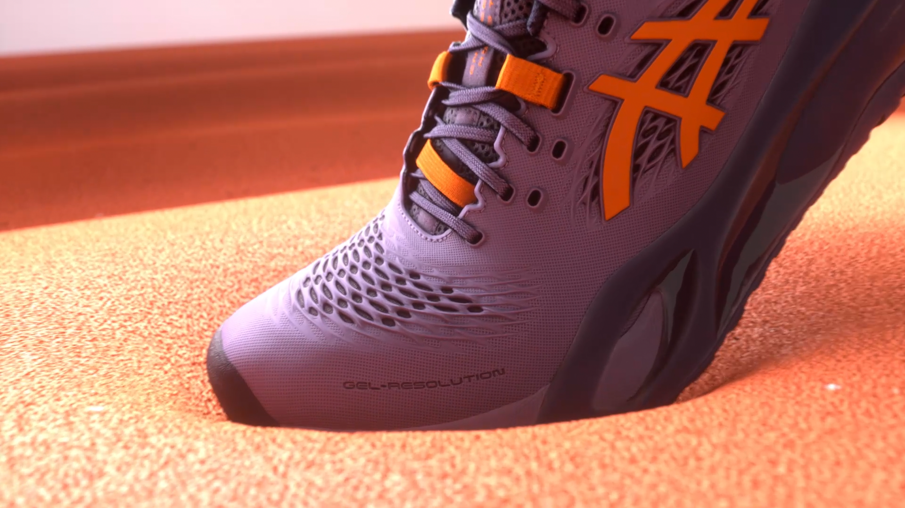
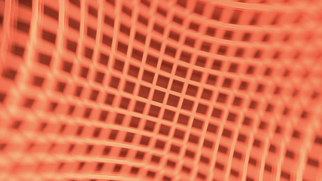
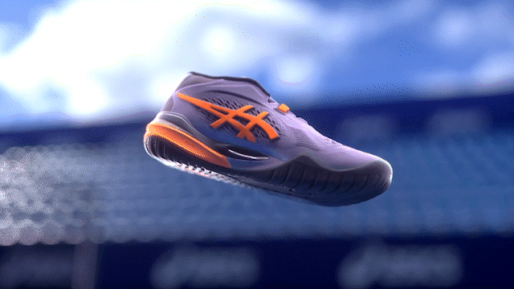
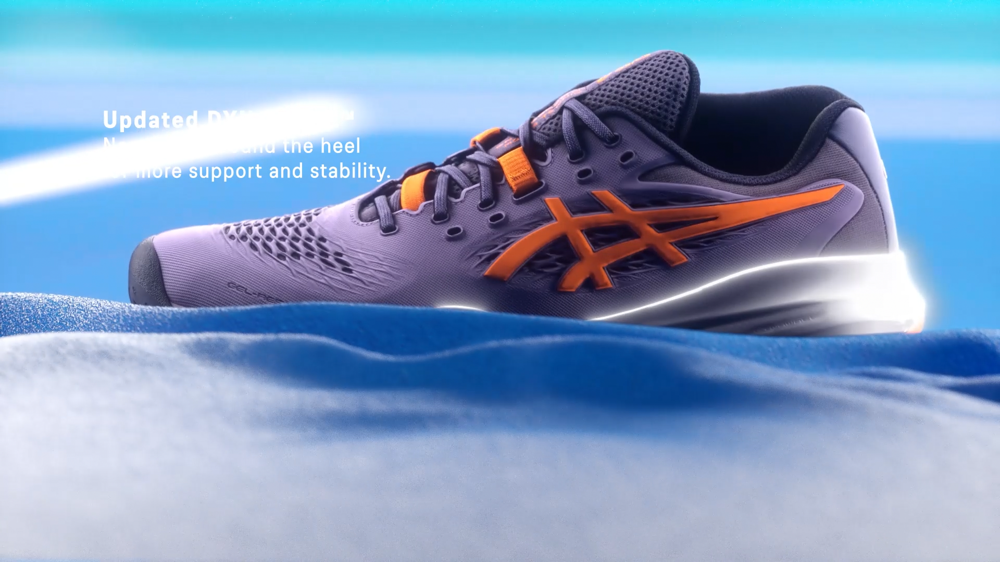
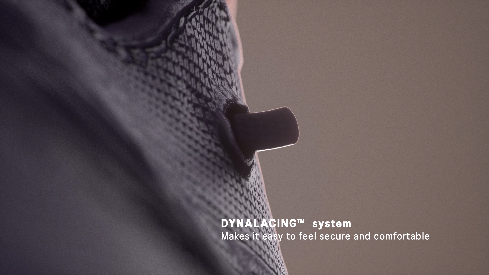
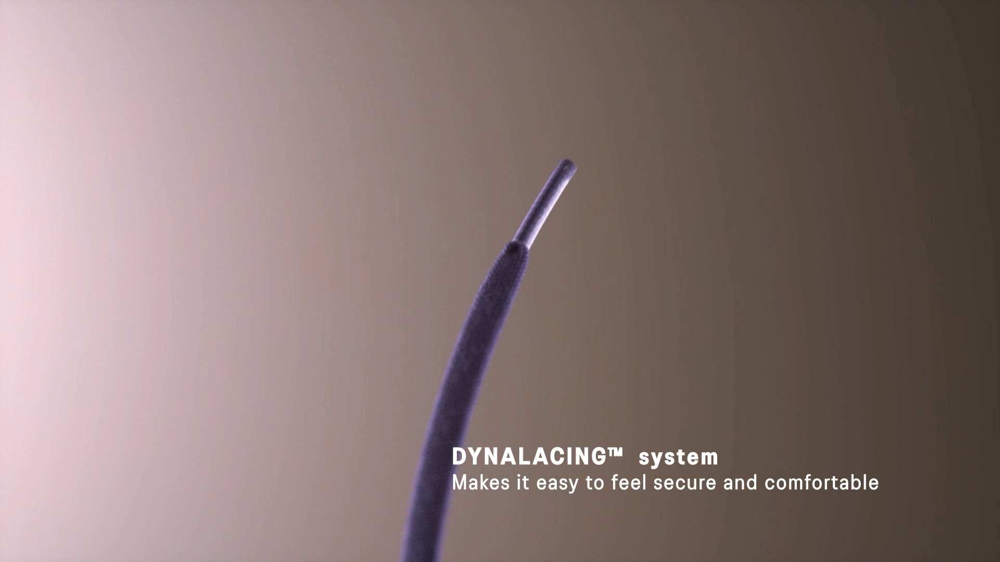
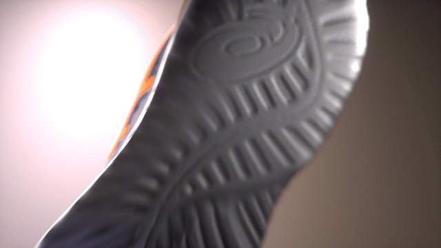
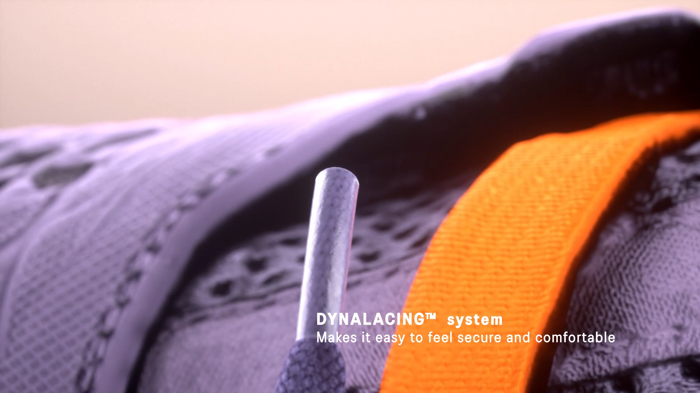
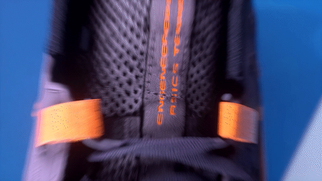
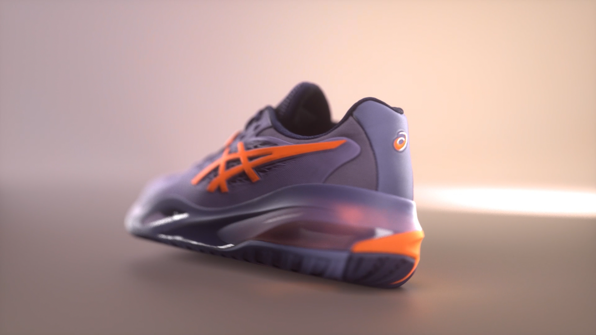

Product Visualization / 3D Animation
ASICS GEL-RESOLUTION™ X
A global B2C commercial visual project for ASICS GEL-RESOLUTION™ X, translating product technology, motion, and performance details into a premium cinematic product story.
Project Film
Project Impact
Built on previous ASICS B2B technical-video experience, this project focused on leading the visual development for the first global B2C commercial of GEL-RESOLUTION™ X. The work covered the full production flow from early creative strategy and storyboard planning to final motion execution, translating product-performance features into a premium commercial visual language for the global market.
Challenge & Execution
High-fidelity asset reconstruction
The physical shoe was 3D scanned and rebuilt through Blender retopology, while Substance 3D Painter was used to develop high-resolution materials, ensuring the close-up shots retained both realism and product-level detail.
Technical visualization translation
The product technology narrative was reorganized into a clearer cinematic structure, translating abstract performance details into concrete visual sequences and building a more differentiated product presentation.
Cross-department communication and delivery
Product requirements such as outsole support and cushioning systems were translated into visuals that consumers could immediately understand. I was responsible for roughly 70% of the core visual output and provided editing guidance to ensure the final film aligned with the brand’s global commercial standard.
Visual Breakdown
A curated selection of material close-ups, technical feature shots, and final campaign visuals, showing how product details were translated into cinematic commercial imagery.












